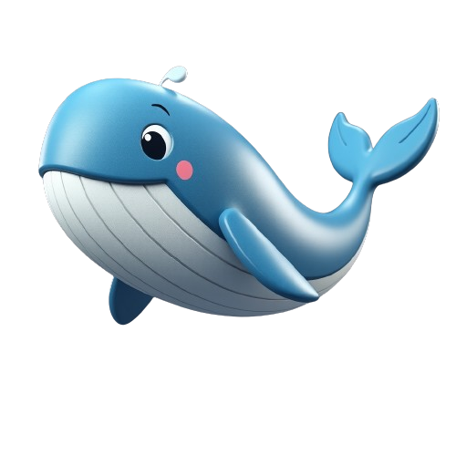
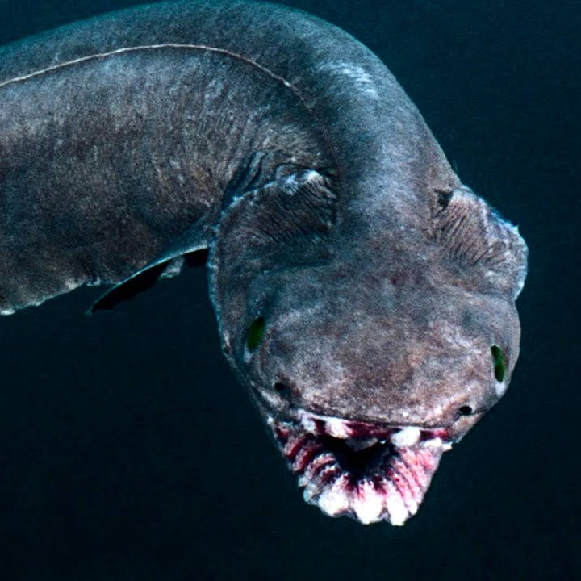
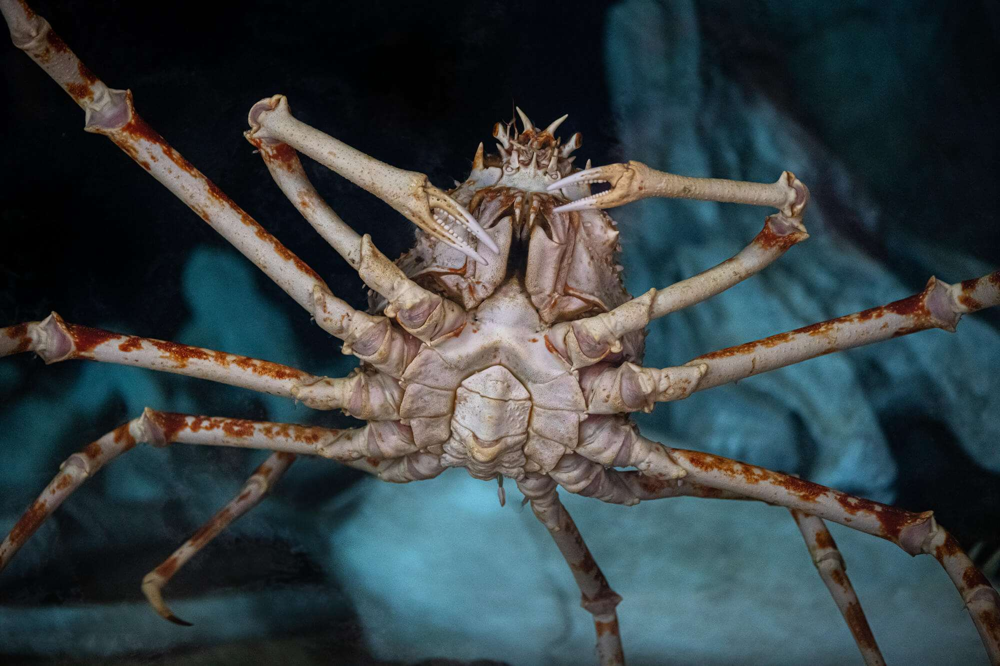
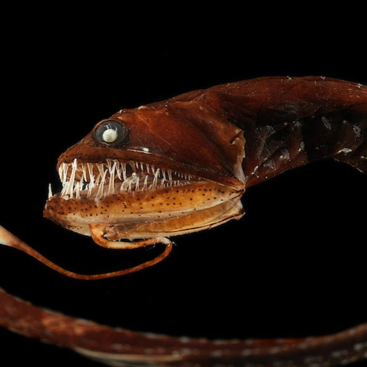

What is a Sea Creature?
"A sea creature is any animal that lives in the sea or ocean, including large mammals like whales and dolphins; fish, including sharks and tropical types of fish; invertebrates like octopuses and jellyfish; and crustaceans, like crabs and lobsters. Most contribute to ecological balance and are sources of food both for humans and other animals, supporting industries connected with fishing and tourism. Most are under threat from pollution, climate change, and overfishing, so effective conservation efforts are very important for helping to safeguard their habitat and ensure the survival of these species."
Types of creatures

-
Mammals: Humans, Dogs, Cats, Elephants
-
Birds: Eagles, Sparrows, Penguins
-
Reptiles: Snakes, Lizards, Crocodiles
-
Amphibians: Frogs, Salamanders, Toads
-
Fish: Sharks, Goldfish, Salmon
-
Insects: Butterflies, Bees, Ants
-
Arachnids: Spiders, Scorpions
-
Mollusks: Snails, Octopuses
-
Mythical Creatures: Dragons, Fairies, Mermaids
-
Extraterrestrial Creatures: Aliens
5 Creepiest Creatures Worldwide
1) Frilled Shark

"The Frilled shark (Chlamydoselachus anguineus) is a wonderful and unusual, ancient species of shark that has amazed marine biologists and laypeople alike. Called a "living fossil," this peculiar shark has been around for more than 80 million years but continues to undergo significant adaptations. The frilled shark, so named because of its long body with gills that look almost webbed in appearance, can grow up to about 6.5 feet (2 meters) in length. The Anglerfish mainly dwells in the deep-sea, with the depth of 200 to 1,200 feet (60 to 370 meters) which is quite infrequent seeing it. One of the frilled shark's most impressive adaptations is a jaw that can open very wide in order to catch prey like squid and fish. The frilled shark is a marvellous creature, but little about its behavior is known, and there are few reports of sightings in recent years; perhaps further demonstrating what mysteries we have yet to unveil within our ocean."
2) Japanese Spider Crab

"The Japanese spider crab (Macrocheira kaempferi), also one of the biggest living, and a unique-looking marine animals known for their colossal size and otherworldly color. Abundant in the seas near Japan, this crab is second largest by maximum size of all crustaceans globally, and has a leg span of up to 12 feet (3.7 m) That creepy thing is over one meter long and covered with a hard exoskeleton, long scrawny legs that are sometimes burdened with barnacles and other marine life. Despite their size, Japanese spider crabs are relatively docile and scavenger species that feed mainly on detritus and small animals. All these deep-sea animals are fascinating and tougher than they appear, spending most of their lives 100 years in cold depths there."
3) Deep Sea Dragonfish

"The deep sea dragonfish (Grammatostomias flagellibarba) is a unique and elusive inhabitant of the abyssal depths of the ocean, usually at depth between 1,500 and 2.000 feet (450 to 600 meters). This status fish will never leave owing to the unique appearance they come with — long, slender bodies and bioluminescent spine filaments for communication and predation in dark waters. With fangs resembling those of a vampire and photophores (specialized light-producing organs), the chain of teeth gives it an intimidating appearance. Using its long, barbed lure to attract prey, the deep sea dragonfish primarily targets smaller fish and zooplankton. Resulting from extreme adaptation, this species is a champion example of the noteworthy biodiversity and adaptability stored within the deep sea — a centre for nature to master challenging ecological circumstances."
4) Goblin Shark

"The goblin shark (Mitsukurina owstoni) is a deep-sea bottom-dwelling species of pink-skinned slime-skinned shark; it has a long-extended snout with jaw protruding forward to catch prey. This shark, commonly called a "living fossil", has been around for more than 125 million years and is like an evolutionary throwback to an ancient lineage that has changed little over its evolutionary history. Goblin sharks generally inhabit depths between 100 and 1,200 feet (30 to 370 m) with most records in Japanese waters but they have been observed worldwide. Slushii — their jellyfish-like, pale pink colour works as camo in the deep sea These sharks are known to primarily consume squid, fish and crustaceans via their unique jaw structure that allows them to quickly snap up prey. Marine biologists and fans of the ocean alike will find them intriguing, as their nature is elusive and they appear to be quite bizarre. onments."
5) Anglerfish

"With its unique hunting method and distinct appearance, the anglerfish has become such an interesting deep-sea creature. Having a bioluminescent lure protruding from its head, the anglerfish attracts preys in the dark depths of the ocean. There are over 200 different species of anglerfish, which vary in size and habitat; some are even found dwelling at great depths exceeding 2,000 meters. Most anglerfish have a somewhat strange body shape, with many having a large head and a wide mouth containing many large teeth, which is well suited to catching prey. Equally interesting are their mating habits. Males are very small in comparison to the female and, in many cases, will actually attach themselves to the female, becoming a permanent mate. This means both of them can survive in the hostile surroundings of the deep sea.
"